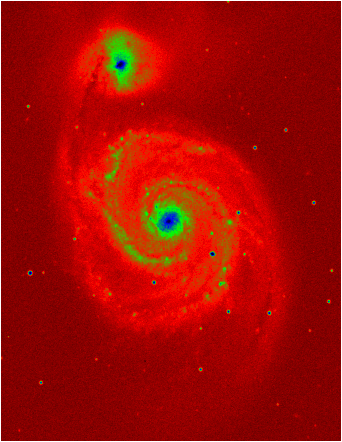
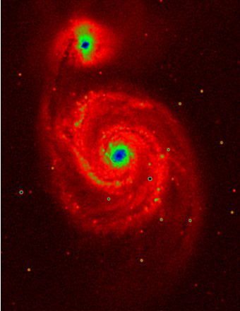
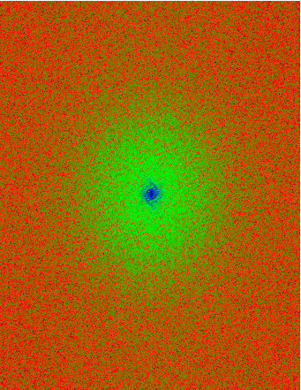
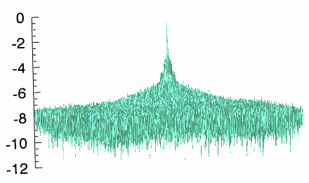

The Fast Fourier Transform (FFT) is used to transform an image from the spatial domain to the frequency domain, most commonly to reduce background noise from the image. The following example shows how to remove background noise from an image of the M-51 whirlpool galaxy, using the following steps:
See Fast Fourier Transform (FFT) Background for a more complete description of this process.
The example data is available in the
examples/data
directory of your IDL installation. The code shown below creates the following images, each displayed in separate windows.
|  |  |
Original image of M-51 galaxy (left) and inverse-FFT-transformed image (right). The red background pixels have been reduced in the second image.
Intermediate results:
|  |  |
Power spectrum image (left) and surface plot (right)
; Open the image.
imageSize = [340, 440]
file = FILEPATH('m51.dat', $
SUBDIRECTORY = ['examples', 'data'])
; Use READ_BINARY to read the image as a binary file.
binary_img = READ_BINARY(file, DATA_DIMS = imageSize)
; Display the original image
img01 = image(binary_img, RGB_TABLE = 6)
; Transform the image into the frequency domain and
; shift the zero-frequency location from (0,0) to
; the center of the data.
ffTransform = FFT(binary_img, /CENTER)
; Compute the power spectrum of the transform and
; apply a log scale.
powerSpectrum = ABS(ffTransform)^2
scaledPowerSpect = ALOG10(powerSpectrum)
; Display the log-scaled power spectrum as an image.
img02 = IMAGE(scaledPowerSpect, RGB_TABLE = 6)
; Scale the power spectrum to make its maximum value
; equal to 0.
scaledPS0 = scaledPowerSpect - MAX(scaledPowerSpect)
; Display the log-scaled power spectrum as a surface.
s3 = SURFACE(scaledPS0, $
AXIS_STYLE = 0, $
ZTITLE = 'Max-Scaled(Log(Squared Amplitude))', $
FONT_SIZE = 8, $
COLOR = 'aquamarine')
; Add the z-axis.
ax = AXIS('Z', LOCATION = [0, imageSize[1], 0])
; Apply a mask to remove values less than -7, just
; below the peak of the power spectrum. The data type
; of the array returned by the FFT function is complex,
; which contains real and imaginary parts. In image
; processing, we are more concerned with the amplitude,
; which is the real part. The amplitude is the only part
; represented in the surface and displays the results of
; the transformation.
mask = REAL_PART(scaledPS0) GT -7
; Apply the mask to the transform to exclude the noise.
maskedTransform = ffTransform*mask
; Perform an inverse FFT to the masked transform, to
; transform it back to the spatial domain.
inverseTransform = REAL_PART(FFT(maskedTransform, $
/INVERSE, /CENTER))
; Display the result of the inverse transformation.
img03 = IMAGE(inverseTransform, RGB_TABLE = 6)